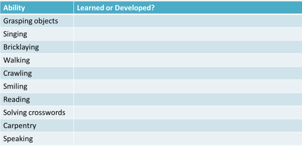
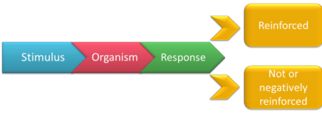
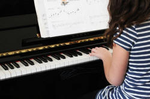

TKT Module 1: Background to language learning
The difference (and similarities) between L1 and L2 learning

There is a longer and more technical guide to first and second language acquisition theories on this site (new tab). What follows, however, is all you need to know for TKT.
 |
Key concepts in this guideBy the end of this guide, you should be able to understand and use these key concepts:
|
Look out for these words like this
in the text.
There will be tests at the end of the guide for you to check that
you understand the ideas.
 |
Innateness: language is in our genes |
You were not born with the ability to speak, ride a bicycle, play the piano, type, play chess, walk or dive for pearls. What concerns us here are the abilities you naturally develop as opposed to those which you are taught.
Some of this is quite easy. Divide this list into learned
(i.e., taught or self-taught) abilities and those which naturally
develop in all normal children:
Click on the table when you have done that.

It is clear that some behaviours, such as the ability to grasp
objects or walk are biologically determined because all children,
regardless of their culture, learn to do it pretty much at the same
stage in their development. For example, most babies learn to
sit, then roll over, then crawl and finally walk between the first 9
to 12 months of life. None, however, has
to be taught the skill.
Babies in all cultures learn to talk between 18 and 28 months of
life.
Some behaviours are never naturally acquired so if you never learn
to ride a bicycle or play a decent game of chess, you will not
magically develop the ability to do so, no matter how long you live.
 |
The U-shaped learning curve |
In their first languages, children often use irregular forms and then revert to an
inaccurate regular form before once more acquiring the irregular
form. So, for example, a child may produce
The mice ran up
the clock
then begin to say
The mouses runned up the clock
before settling on the correct version later.
If this is true, the importance is obvious: it means that language
cannot be being acquired by simple imitation and practice. If
it were, children would never produce something like *comed
instead of came for the simple reason that they would never
hear it.
relevance to (English) language teaching
- teaching children
- If the innateness theories are right, then what is required
is simple exposure at the right time to a rich linguistic
environment rather than explicit instruction. Instruction
may, in fact, be counterproductive.
Practice and correction, too, are pointless. - teaching older children and adults
- We should not expect adults to acquire language simply by exposure.
 |
Imitation theory: I speak what I hear |
Children speak the language(s)
in which they were raised. A child taken from an English-speaking
environment at an early age and raised in an Urdu-speaking
environment will acquire Urdu as its first language.
The theory is that imitation must have a role to play because you cannot
understand the meaning of a word from its form so
you must hear it spoken in a clear context to be able to imitate its
use.
There are some problems:
- Children's speech is different from adults' speech
Children do not produce fully formed sentences. They progress from 1-word utterances (acquired around 12 months) to 2-word utterances (around 18 months) and then go on to more complex sentences. - The U-shaped learning curve
If imitation were all there was to acquiring language, then the U-shaped curve, going from correct production of irregular forms to recognition of the irregularity (e.g., from went via goed and then back to went) would not occur because a child would very rarely, if ever, hear the incorrect form in order to imitate it.
relevance to (English) language teaching
A number of approaches to and techniques in teaching languages
appear to be based on the assumption that people learn language by a
process of imitation of a model.
Why do you drill in a classroom if you don't believe imitation and
repetition are
effective?
 |
Reinforcement Theory: praise, correction and reward |
The theory claims that children learn to produce correct language
because they are praised and rewarded (by adult approval) when they
do and are corrected when they don't.
Here's a
very brief summary:

- The process starts with a stimulus, say, a question from a carer such as Who did you see? put to the organism (in this case, a child). The stimulus can elicit a variety of responses but only the 'right' one will be reinforced.
- So, for example, if the child responds with I seed Tom the carer will negatively reinforce it with No, say 'I saw Tom'.
- If, eventually, the carer can persuade the child to produce a correct utterance, the response will be rewarded (i.e., reinforced) with something like Oh! That's lovely! and the child will learn the form.
- Enough Stimulus > Response > Reinforcement cycles will see the habit instilled and the language acquired.
There are three problems with the theory.
- If a child produces a well formed but untrue statement, carers are more likely to correct it or at least avoid reinforcing it. So a true but incorrectly formed statement may receive praise and a correctly formed but untrue statement will receive censure of some kind.
- Cuteness will be reinforced
Carers and other adults have frequently been observed reinforcing false structure and lexical use simply because it is cute and endearing. Thus Choo-choo Bang-bang! while meaningless, uncommunicative and poorly formed may produce a positive response in doting adults. - Even when adults do focus on correcting form, the research shows that it is almost wholly ineffective.
relevance to (English) language teaching
Much that is recommended in classrooms in terms of praising learners and error correction is based (even implicitly) on this kind of behaviourist theorising. It is a short step from asserting that all learners respond positively to praise and that praise motivates them to perform better to suggesting that reinforcing acceptable language will lead to the instilling of correct language habits.
 |
Active Construction of a Grammar Theory |
The theory is a little like Innateness theory.
For example, a French child
will notice that in the language it hears, the adjective normally
follows the noun (un
évènement fantastique).
A
child in an English-speaking environment will hear, by contrast,
a fantastic event and notice that English is an
adjective–noun language.
Enough exposure will result in the
knowledge becoming permanently fixed.
Such hypothesising about language form neatly explains the U-shaped
learning curve described in this guide. When first acquired,
the rule is applied indiscriminately and then it is later amended to
account for exceptions.
relevance to (English) language teaching
If learners (of whatever age) of a second or subsequent language are applying this kind of rule-forming behaviour to the language they hear then concepts such as noticing and the positive role of error become even more important.
 |
Self-test questions |
Before you go on, make sure you can answer these questions. If you can't, go back to the sections which give you trouble.
- What does innateness theory claim?
- What is the U-shaped learning curve?
- If you believe language is learned by listening and copying what you hear, which theory of learning do you support?
- In which theory is the idea of reinforcement important?
- What is active construction of grammar theory?
If you are happy with your progress, go on.
|  |
Tests and practice for TKT |
| Test 1 | A short matching task |
| Test 2 | A gap-fill test |
| Test 3 | A gap-fill test |
| Test 4 | A gap-fill test |
Return to the Module 1 index:
or go on to the next
guide which is to learner characteristics.